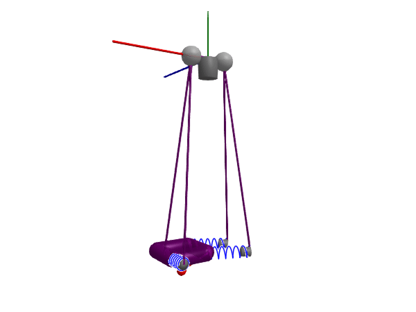
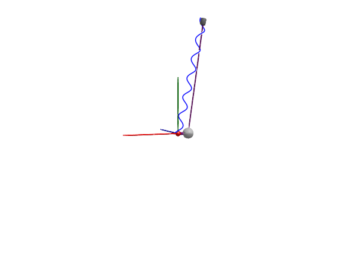

Swing
In this example, we will model a swing consisting of a rigid seat suspended in 4 ropes, mounted symmetrically in a ceiling. Each rope is modeled as a stiff rod with a small point mass at the center of gravity, terminated by a parallel spring-damper to model slight flexibility in the ropes. The ceiling mounting points are modeled as spherical joints, i.e., they do not transmit any torque in any direction. The rim of the seat is modeled as 4 rigid bodies configured in a square, as well as one point mass representing the load, located slightly below the rim assembly.

We start by defining a single rope component and attach it to a body in order to verify that it's working.
using Multibody
using ModelingToolkit
using Plots
using JuliaSimCompiler
using OrdinaryDiffEq
t = Multibody.t
D = Differential(t)
world = Multibody.world
@mtkmodel SwingRope begin
@components begin
frame_a = Frame()
frame_b = Frame()
joint1 = Spherical(isroot=true, state=true, d=0.001, color=[0.7, 0.7, 0.7, 0.7])
rope = BodyShape(r=[0.0,-1,0], m=0.05, radius=0.01)
spring = Spring(c = inv(0.04/60), m=0.01, radius=0.06)
damper = Damper(d = 50.0, radius=0.05, length_fraction=0.1)
end
@equations begin
connect(frame_a, joint1.frame_a)
connect(joint1.frame_b, rope.frame_a)
connect(rope.frame_b, spring.frame_a, damper.frame_a)
connect(spring.frame_b, damper.frame_b, frame_b)
end
end
@mtkmodel SimpleSwing begin
@structural_parameters begin
h = 2
w = 0.4
end
@components begin
world = World()
upper_trans1 = FixedTranslation(r=[-w/2, 0, 0])
rope1 = SwingRope(rope.r=[-w/2, h, -w/2])
body = Body(m=6, isroot=true, I_11=0.1, I_22=0.1, I_33=0.1)
damper = Damper(d=10.0)
end
@equations begin
connect(world.frame_b, upper_trans1.frame_a)
connect(rope1.frame_a, upper_trans1.frame_b)
# connect(world.frame_b, rope1.frame_a)
connect(rope1.frame_b, body.frame_a)
connect(world.frame_b, damper.frame_a)
connect(body.frame_a, damper.frame_b)
end
end
@named model = SimpleSwing()
model = complete(model)
ssys = structural_simplify(multibody(model))
prob = ODEProblem(ssys, [
collect(model.body.v_0) .=> 0;
collect(model.body.w_a) .=> 0;
], (0, 4))
sol = solve(prob, ImplicitEuler(autodiff=false), reltol=5e-3)
@assert SciMLBase.successful_retcode(sol)import GLMakie
Multibody.render(model, sol; z = -5, filename = "simple_swing.gif") # Use "simple_swing.mp4" for a video file
This makes for a rather interesting-looking springy pendulum!
Next, we create the full swing assembly
@mtkmodel Swing begin
@structural_parameters begin
h = 2
w = 0.4
end
@components begin
world = World()
upper_trans1 = FixedTranslation(r=[-w/2, 0, 0])
upper_trans2 = FixedTranslation(r=[ w/2, 0, 0])
rope1 = SwingRope(rope.r=[-w/2, -h, -w/2])
rope2 = SwingRope(rope.r=[-w/2, -h, w/2])
rope3 = SwingRope(rope.r=[ w/2, -h, -w/2])
rope4 = SwingRope(rope.r=[ w/2, -h, w/2])
body_back = BodyShape(m=0.1, r = [w, 0, 0])
body_front = BodyShape(m=0.1, r = [w, 0, 0])
body_left = BodyShape(m=0.1, r = [0, 0, w])
body_right = BodyShape(m=0.1, r = [0, 0, -w])
body = Body(m=6, isroot=true, r_cm = [w/2, -w/2, w/2], cylinder_radius=0.01)
damper = Damper(d=0.5)
end
@equations begin
# Rope assembly
connect(world.frame_b, upper_trans1.frame_a, upper_trans2.frame_a)
connect(rope1.frame_a, rope2.frame_a, upper_trans1.frame_b)
connect(rope3.frame_a, rope4.frame_a, upper_trans2.frame_b)
# Body assembly
connect(body_back.frame_a, body_left.frame_a, rope1.frame_b)
connect(body_left.frame_b, body_front.frame_a, rope2.frame_b)
connect(body_front.frame_b, body_right.frame_a, rope4.frame_b)
connect(body_right.frame_b, rope3.frame_b) # Don't close the rigid kinematic loop
connect(body_back.frame_a, body.frame_a)
# World damping (damps swing motion)
connect(world.frame_b, damper.frame_a)
connect(body.frame_a, damper.frame_b)
end
end
@named model = Swing()
model = complete(model)
ssys = structural_simplify(multibody(model))
d = 10
dj = 0.01
prob = ODEProblem(ssys, [
collect(model.body.r_0) .=> [0, -2, 0.0];
collect(model.body_right.body.r_0) .=> [0, -2, 0.5];
collect(model.body_left.body.r_0) .=> [0, -2, -0.5];
collect(model.body.v_0) .=> [0, 0, 5];
model.damper.d => 1;
model.rope1.damper.d => d;
model.rope2.damper.d => d;
model.rope3.damper.d => d;
model.rope4.damper.d => d;
model.rope1.joint1.d => dj;
model.rope2.joint1.d => dj;
model.rope3.joint1.d => dj;
model.rope4.joint1.d => dj;
], (0.0, 6))
@time sol = solve(prob, ImplicitEuler(autodiff=false), reltol=1e-2)
@assert SciMLBase.successful_retcode(sol)
Plots.plot(sol, idxs = [collect(model.body.r_0);])
import GLMakie
Multibody.render(model, sol; y = -1, z = -3, lookat = [0, -1, 0], filename = "swing.gif") # Use "swing.mp4" for a video fileThere is an initial transient in the beginning where the springs in the ropes are vibrating substantially, but after about a second this transient is damped out (thanks in part to the, in this case desired, numerical damping contributed by the implicit Euler solver).